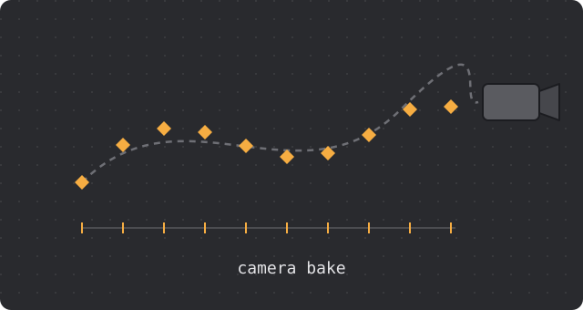

v1.0 · Houdini 22Camera Bake
Crea una copia de la cámara con un keyframe en cada frame, en espacio mundo y sin padres ni constraints. Lista para exportar a FBX, Alembic o USD.
Huella SHA-256 del script en SHA256SUMS.
Instalación
- En un shelf, clic derecho → New Tool… y ponle de nombre Camera Bake.
- En la pestaña Script, con el lenguaje en Python, pega el script y pulsa Accept.
Uso
- Selecciona una o varias cámaras, o mira a través de una en el viewport.
- Pulsa Camera Bake en el shelf y confirma el rango de frames (por defecto, el del playbar).
- Aparece <cámara>_baked en /obj. Si ya existe, te pregunta si reemplazarla. Exporta esa, no la original.
Hornea la posición y rotación en espacio mundo, con todo lo que mueve la cámara: padres, constraints, Look At, Follow Path, CHOPs y expresiones. Copia todos los parámetros de la cámara, también los extra de render (Karma, Redshift…): los animados se hornean frame a frame y el resto queda como valor fijo, sin referencias a otros nodos. Corrige los saltos de 360° en la rotación.
La cámara original no se toca. Se deshace con un solo Undo y Esc cancela el horneado.
Funciona con cámaras de OBJ. La escala de los padres no se copia: si la jerarquía tiene escala, el script avisa.